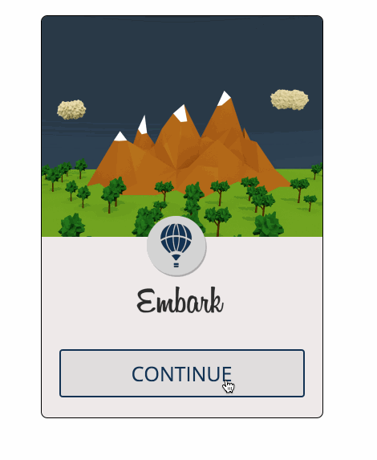
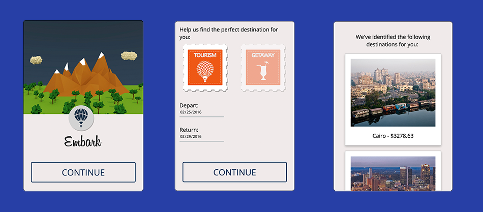

We built embark at HackIllinois 2016. This was the first hackathon experience for me, and the rest of my team too.
I was responsible for the application's frontend development. I used HTML, CSS and JavaScript for building the different elements required for the interface. A large part of the idea behind the application was just improving and making the experience of creating complicated travel itineraries clutter-free. Therefore, the user experience was crucial in conveying the idea behind the hack. We managed to win the second prize for the best use of Amadeus' Sandbox APIs.


Something important I learnt through this was managing resources, especially at a hackathon. I spent more time than necessary on the landing page, and though I've been successful in recycling those mountain illustrations for this website, I believe that time could have been spent building the application responsive.